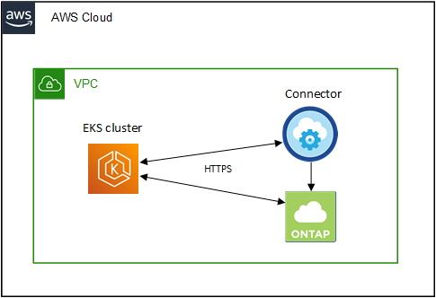

Manos a la obra
Manos a la obra
Requisitos para clústeres de Kubernetes en AWS
 Sugerir cambios
Sugerir cambios
Puede añadir clústeres gestionados de Amazon Elastic Kubernetes Service (EKS) o clústeres de Kubernetes autogestionados en AWS a BlueXP. Antes de poder añadir los clústeres a BlueXP, debe asegurarse de que se cumplen los siguientes requisitos.

|
En este tema se utiliza Kubernetes cluster, donde la configuración es la misma para EKS y clústeres de Kubernetes autogestionados. El tipo de clúster se especifica dónde difiere la configuración. |
Requisitos
- Astra Trident
-
Se requiere una de las cuatro versiones más recientes de Astra Trident. Puede instalar o actualizar Astra Trident directamente desde BlueXP. Usted debe "revise los requisitos previos" Antes de instalar Astra Trident.
- Cloud Volumes ONTAP
-
Cloud Volumes ONTAP para AWS debe configurarse como almacenamiento back-end para el clúster. "Vaya a los documentos de Astra Trident para ver los pasos de configuración".
- Conector BlueXP
-
Debe ejecutarse un conector en AWS con los permisos necesarios. Más información a continuación.
- Conectividad de la red
-
Se requiere conectividad de red entre el clúster de Kubernetes y el conector y entre el clúster de Kubernetes y Cloud Volumes ONTAP. Más información a continuación.
- Autorización de RBAC
-
Debe autorizarse el rol BlueXP Connector en cada clúster de Kubernetes. Más información a continuación.
Prepare un conector
Se requiere un conector BlueXP en AWS para detectar y gestionar clústeres de Kubernetes. Tendrá que crear un conector nuevo o utilizar un conector existente que tenga los permisos necesarios.
Cree un conector nuevo
Siga los pasos de uno de los siguientes enlaces.
Agregue los permisos necesarios a un conector existente
A partir de la versión 3.9.13, todos los conectores _recién creados incluyen tres nuevos permisos de AWS que permiten la detección y la gestión de los clústeres de Kubernetes. Si ha creado un conector antes de esta versión, deberá modificar la directiva existente para el rol IAM del conector para proporcionar los permisos.
-
Acceda a la consola de AWS y abra el servicio EC2.
-
Seleccione la instancia de conector, haga clic en Seguridad y haga clic en el nombre de la función IAM para ver el rol en el servicio IAM.

-
En la ficha permisos, expanda la directiva y haga clic en Editar directiva.

-
Haga clic en JSON y agregue los siguientes permisos en el primer conjunto de acciones:
-
ec2:regiones describidas
-
eks:ListClusters
-
eks:DescribeCluster
-
iam:GetInstanceProfile
-
-
Haga clic en revisar directiva y luego en Guardar cambios.
Revise los requisitos de red
Debe proporcionar conectividad de red entre el clúster de Kubernetes y el conector, y entre el clúster de Kubernetes y el sistema Cloud Volumes ONTAP que proporciona almacenamiento de back-end al clúster.
-
Cada clúster de Kubernetes debe tener una conexión entrante desde el conector
-
El conector debe tener una conexión de salida a cada clúster de Kubernetes a través del puerto 443
La forma más sencilla de proporcionar esta conectividad es poner en marcha el conector y Cloud Volumes ONTAP en el mismo VPC que el clúster de Kubernetes. De lo contrario, deberá configurar una conexión VPC peering entre los distintos VPC.
Aquí hay un ejemplo que muestra cada componente en el mismo VPC.

En este otro ejemplo se muestra un clúster de EKS que se ejecuta en un VPC diferente. En este ejemplo, VPC peering proporciona una conexión entre el VPC del clúster de EKS y el VPC del conector y Cloud Volumes ONTAP.

Configure la autorización de RBAC
Debe autorizar el rol de conector en cada clúster de Kubernetes para que el conector pueda detectar y gestionar un clúster.
Se requiere una autorización diferente para habilitar diferentes funciones.
- Backup y restauración
-
El backup y la restauración solo necesitan una autorización básica.
- Añada clases de almacenamiento
-
Se requiere una autorización ampliada para añadir clases de almacenamiento mediante BlueXP y supervisar el clúster en busca de cambios en el back-end.
- Instale la trident
-
Debe proporcionar una autorización completa para que BlueXP instale Astra Trident.
Cuando se instala Astra Trident, BlueXP instala el secreto de Kubernetes y back-end de Astra Trident que contiene las credenciales que Astra Trident necesita para comunicarse con el clúster de almacenamiento.
-
Cree una función y un enlace de roles del clúster.
-
Puede personalizar la autorización en función de sus requisitos.
Backup/restauraciónAñada una autorización básica para habilitar el backup y la restauración para los clústeres de Kubernetes.
apiVersion: rbac.authorization.k8s.io/v1 kind: ClusterRole metadata: name: cloudmanager-access-clusterrole rules: - apiGroups: - '' resources: - namespaces verbs: - list - watch - apiGroups: - '' resources: - persistentvolumes verbs: - list - watch - apiGroups: - '' resources: - pods - pods/exec verbs: - get - list - watch - apiGroups: - '' resources: - persistentvolumeclaims verbs: - list - create - watch - apiGroups: - storage.k8s.io resources: - storageclasses verbs: - list - apiGroups: - trident.netapp.io resources: - tridentbackends verbs: - list - watch - apiGroups: - trident.netapp.io resources: - tridentorchestrators verbs: - get - watch --- apiVersion: rbac.authorization.k8s.io/v1 kind: ClusterRoleBinding metadata: name: k8s-access-binding subjects: - kind: Group name: cloudmanager-access-group apiGroup: rbac.authorization.k8s.io roleRef: kind: ClusterRole name: cloudmanager-access-clusterrole apiGroup: rbac.authorization.k8s.ioClases de almacenamientoAgregue autorización expandida para agregar clases de almacenamiento con BlueXP.
apiVersion: rbac.authorization.k8s.io/v1 kind: ClusterRole metadata: name: cloudmanager-access-clusterrole rules: - apiGroups: - '' resources: - secrets - namespaces - persistentvolumeclaims - persistentvolumes - pods - pods/exec verbs: - get - list - watch - create - delete - watch - apiGroups: - storage.k8s.io resources: - storageclasses verbs: - get - create - list - watch - delete - patch - apiGroups: - trident.netapp.io resources: - tridentbackends - tridentorchestrators - tridentbackendconfigs verbs: - get - list - watch - create - delete - watch --- apiVersion: rbac.authorization.k8s.io/v1 kind: ClusterRoleBinding metadata: name: k8s-access-binding subjects: - kind: Group name: cloudmanager-access-group apiGroup: rbac.authorization.k8s.io roleRef: kind: ClusterRole name: cloudmanager-access-clusterrole apiGroup: rbac.authorization.k8s.ioInstalación de TridentUtilice la línea de comandos para proporcionar autorización completa y habilitar BlueXP para instalar Astra Trident.
eksctl create iamidentitymapping --cluster < > --region < > --arn < > --group "system:masters" --username system:node:{{EC2PrivateDNSName}} -
Aplique la configuración a un clúster.
kubectl apply -f <file-name>
-
-
Cree una asignación de identidad al grupo de permisos.
Utilice eksctlUtilice eksctl para crear una asignación de identidad IAM entre un clúster y la función IAM del conector BlueXP.
A continuación se muestra un ejemplo.
eksctl create iamidentitymapping --cluster <eksCluster> --region <us-east-2> --arn <ARN of the Connector IAM role> --group cloudmanager-access-group --username system:node:{{EC2PrivateDNSName}}Editar autenticación de awsEdite directamente ConfigMap de AWS-auth para agregar acceso de RBAC a la función IAM para el conector BlueXP.
A continuación se muestra un ejemplo.
apiVersion: v1 data: mapRoles: | - groups: - cloudmanager-access-group rolearn: <ARN of the Connector IAM role> username: system:node:{{EC2PrivateDNSName}} kind: ConfigMap metadata: creationTimestamp: "2021-09-30T21:09:18Z" name: aws-auth namespace: kube-system resourceVersion: "1021" selfLink: /api/v1/namespaces/kube-system/configmaps/aws-auth uid: dcc31de5-3838-11e8-af26-02e00430057c